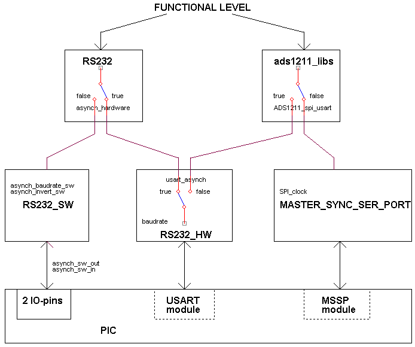
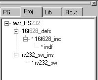
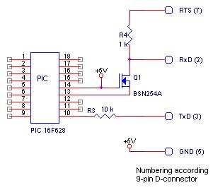
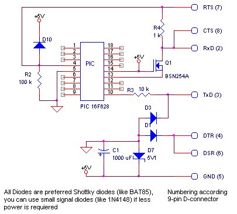

March 2003
RS232 + SPI
Introduction
This's an attempt to create libraries that always give the same functionaliteit to the user, indepent of the devices chozen and therefor independant of the selected PIC.
At the functional level I'm often in need of both RS232 and SPI devices.
For historical reasons, I had an software RS232 library available. So when both are needed and the PIC doesn't have a MSSP device, I use the USART for SPI and do the RS232 by software. Because the SPI is far more simple and less time-critical then RS232, I would do it the other way around if I had to do it again.
In JAL this construction still gives some problems, because when a PIC doesn't have one of the devices, the specific registers are not available.

|
Program Hierarchy
Test_RS232 = main programma used for testing the RS232 routines.
16F628_defs = pic hardware definitions, this file must be included or inserted in the main file and adapted to your own hardware settings.
16F628_INC = automatisch vertaalde Microchip INC-file, which is automatically included by the 16f628_defs file.
INDF = Javi's routines for accessing all registers
RS232_SW_INS = RS232 hardware definitions, this file must be included or inserted in the main file and adapted to your own hardware settings.
RS232_SW = the serial software library, which is autonatically included by the rs232_sw_ins file. |

Downloads:
RS232_16F628.ZIP
RS232_16F84A.ZIP |
|
rs232_sw
rs232_sw_ins |
Contains routines for transmitting and receiving through RS232 protocol by software.
Baudrates from 110 Baud ... 230_400 Baud are supported. None standard baudrates are also allowed.
At this moment only 2 stop bits, no parity and non-inverted is supported.
Initialisation is done by rs232_sw_ins, where also the Baudrate is set.
procedure asynch_send_sw (byte in x) is
procedure asynch_receive_sw (byte out x) is |
|
Hardware Interface
This RS232 interface works just as good as all the MAX232 IC's. It's tested upto 115_200 Baud.
In stead of RTS is also possible to use DTR as the positive power supply.
It's even well possible to derive to complete power supply for the PIC and other electronics from the RS232 port, see schematic below.
It's even possible to extend this circuit, so programming of the PIC can be done by the same cicuit, see picprogrammer hardware. |
 |
Common misunderstandings
- Receiving in software is more difficult than transmitting in software. No ! The fault tolerance in transmitting must be less than 2%, while in receiving a tolerance of 5% can be accepted (during 10 bits a maximum deviation of 0.5 bit still gives a good detection).
- Receiving is an asynchronuous action. No ! Waiting for a startbit is very synchronuous.
- Interrupt based receiving is faster than polling based receiving. No ! In interrupts there's always some extra overhead for jumping and saving registers.
|
RS232 interface + power supply
RTS generates positive power supply for the RxD signal. In this cicrcuit it's also used to reset the PIC.
TxD is both used as the received RS232 signal and for generating the ground for the +5 Volt power supply for PIC and other electronics.
DTR is used to generate the ground of the +5 Volt power supply.
GND is used to generate +5 Volt power supply.
CTS and DSR are not used here. |
 |
The double loop
The number of instructions in the double loop equals
N = ( 3 * OuterLoop * InnerLoop ) + ( 4 * OuterLoop ) - 1It's therefore obvious that the InnerLoop realizes the finetuning, and the OuterLoop is used to realize the whole range of Baudrates.